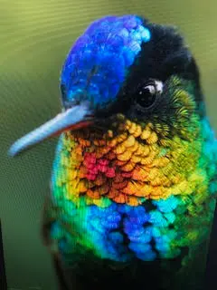
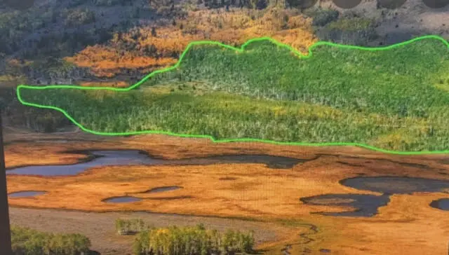
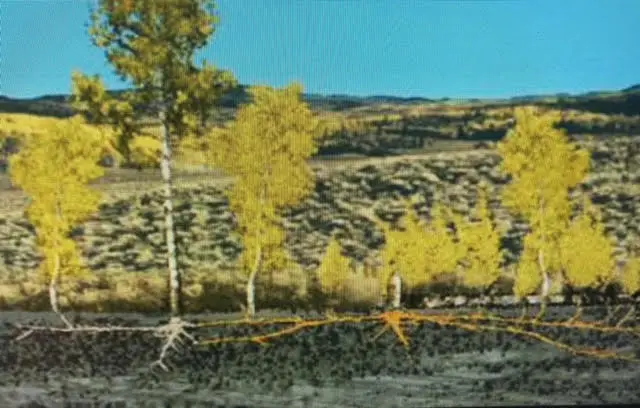
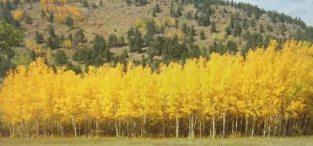

The Transcendentals
Published On: February 6, 2021
“Beautiful shines a spirit through the bruteness and toughness of matter.” (Emerson)
The timeless and universal aspects of life are known as beauty, truth, and goodness. They are endowed properties of all beings, some more than others. In mortals, they are sprinkled in just enough quantity to preserve and leaven the whole, but not nearly enough to straighten the irregular timbers of humanity wholesale. Known as the “transcendentals,” they are among the deepest realities that reflect their divine origin in unity and Light. Substantive to our better nature, all three members of this embodied trinity rivet the eye, attention, and/or admiration when encountered, and help unite people across time and culture. Like the facets of a diamond, in discussing one the others are naturally brought into the conversation.
These divine facets of Light correspond to the three aspects of the field of human interest, and the aims of all progressive education: science (truth), the arts (beauty), and religion (goodness). The philosophical disciplines that study them are logic, aesthetics, and ethics, respectively. Divinity is itself all three virtues and more, diffused and splashed onto the canvas of space-time, offering shimmering flashes of themselves everywhere.
A sacred condition of the heart, goodness is found in various degrees of wattage, as if on a dimmer switch. Goodness also describes foodstuffs, particularly delicacies, as most everyone first eats and drinks with their eyes. The same cannot be said of truth, in greater scarcity than goodness nowadays, relativized by media-conditioned minds to suit the subjective palette of each. Beauty, however, is always in vogue, most brilliantly jeweled in nature. Blasted with an excess of light, nature displays Light’s fiery presence in her figure and form everywhere.
Sadly, all three universal virtues want for the kind of constancy, prevalence and frequency that would make for a better world, and so cannot be directly grasped, firmly held or instantly instilled. We can't get at them. Referring to some purer state of sensation or existence, they defy all attempts at appropriation and use. They make the beholder feel unworthy. Like any commodity, scarcity creates an increase in their value. Hidden in the enclave of matter, they are to be glimpsed obliquely, like an evanescent rainbow, the iridescent plumage of hummingbirds, or green-necked mallards. One must catch the proper angle of their refracted light at just the right moment. And even then, only with the fastest shutter speed and briefest exposure granted to the naked eye.
~Joe Masterleo
Taps and Buckets
Published On: March 25, 2021

March is a “tweener” month, a transition time between winter and spring. It’s also a very unpredictable month here in the northeast, with mixtures of sun, rain, snow, and gale force winds. Temperatures can soar to near 80 degrees or plummet to near zero, creating a pulsating tension between opposites – cold and warm, winter and summer, darkness and light. Such makes March perhaps the most volatile month of the year. March also coincides with several transitional times on the calendar — the vernal equinox, the Maple Moon, and for many, Lent and Easter.
Above ground, trees appear barren and lifeless during the long winter months, while below ground their roots sink deeper into the soil in search of moisture and nutrients for the season of renewal ahead. Sugar Maples are no exception. They too draw up sap from their roots enabling them to survive and recharge during the dark, freezing months of winter. In early spring sap flows downward through the tree to replenish its roots and can be tapped in buckets to make maple syrup. Sap runs best at daytime temperatures of 40 degrees, and nighttime temperatures below freezing. Sap stops running when it is either too cold or too warm and is activated only in that “sweet spot” between temperature fluctuations in mercurial March.
Sugar Maples remind us to tap into our core in transitional seasons when life itself sometimes hangs in the balance, tossed to-and-fro between the fluctuating extremes of faith and doubt, sickness and health, or fear and courage. Crises tend to dim and blind our exterior self as we awaken to and free fall toward our inner self, and with it the few things that matter. Like tree sap in March, the essential meaning of most crises can be found in silent repose beneath the din and tumult of our ruffled souls. Such times provide opportunities to reach for our inner “tap and bucket,” accessing those hidden places where God listens better than we speak, offering consolations from the thunder of his silence. This is particularly so when crises give rise to unsettling thoughts, intense emotions and clouded perspectives that run the gamut, waxing and waning like March weather, or the Maple Moon.
This year March also coincides with the hopeful signs of a passing Covid winter, in the nascent stages of losing its dreadful grip on a nation l-o-n-g ravaged by same. As with other harsh and bitter seasons, it promises to carry and invincible spring and summer in the middle of it, preferably post haste. Meanwhile, those who prefer to access a repose untrammeled by passing times and seasons, know it is available anytime in silence and solitude, stern friends of the godly. May our second consecutive March of limited mobility and imposed distancing be viewed as an opportunity to rediscover this liminal “sweet spot” between extremes, that place of descent into the center of our being that lies in silent union and solidarity with God, nature, and others amid a turbulent world.
Lord, help us to tap into the Tree of Life at our very core. Like the sugar maple, the presence of your living “sap” is found flowing in the depths of all living things in all seasons, without surcease. In these perilous and uncertain times, cause us to rediscover you deeply there, and bring us together with compassion in ways that business as usual, technology, easy comfort and entertainment never can.
~Joe Masterleo
The Omega Tree
Published On: December 9, 2021
~Noel Rigney (lyrics),
~Gloria Shayne (music)
Inherited language is not adequate for the task of naming the deep experiences of life. Containing high frequencies of energy and light, images have the power to excite, heal, transform, and teach. They are closer to our experiences than words and are the midwives between experience and language. Sacred geometry is a universal language that describes the inner workings of nature and the intrinsic order of the universe, connecting inner and outer worlds, uniting all. Differing from standard Euclidian Geometry taught in schools, which adheres to a disconnected view of the universe, sacred or interdimensional geometry embraces the ecological view of a connected universe or unified field.
The Platonic solids are thought of as the sacred geometry ‘building blocks’ of the Universe that were taught in the Greek Mystery Schools 2,500 years ago (these are the tetrahedron, hexahedron, octahedron, dodecahedron, and icosahedron). But the triangle is the symbol that underlies them all. The triangle, and its variants the pyramid and cone, symbolize balance, harmony, and completion. Rising upwards, they elevate us toward ever higher levels of consciousness.
Sacred geometric forms, or archetypes, are recurrent images or motifs that appear in literature, religion, art, or mythology. The word geometry means “earth measure,” meaning that such images are among the eternal icons that are the standard measure of all things terrestrial. Such images are templates of the Infinite Invisible expressed in the earthly domain. The square, for example, connotes foundations, solidity, grounding, practical, ‘earthly,’ dependability, safety, and stability. Like the base of a pyramid, the square creates foundational balance and stability. Circles have been long used to image eternity, whereby every beginning has and end, and every end a beginning. A cross is the intersection of two lines representing where heaven and earth meet in the created order (quantic incarnation), particularly in humankind. And so, a sacred geometric form is an original that serially imitates or replicates in the field of space-time, a shadow of something that points to an invisible template beyond itself. Likewise, the Seed of Life, Flower of Life and Egg of Life are common (sacred) geometric forms that have appeared cross-culturally for millennia, universal constants that give perennial grounding in the eternal amid a continual process of change. In the Judeo-Christian tradition, the Ten Commandments are an archetype of the moral and judicial law. Jesus is the archetype of the Godman. Satan is the archetype of evil. Abraham is the archetype of faith, Thomas of doubt, Judas of betrayal, etc.
Christmas trees are also archetypal. Of various species, shapes, and sizes, they are enjoyed almost universally as festive holiday totems. Overseeing crisply wrapped gifts that lay beneath their verdant branches, they serve as reminders that all is gift. Christmas trees qualify as archetype on at least two counts. First, as universal symbols of the axis mundi (world axis), or Tree of Life, the rotating axis on which all things everywhere pivot, and from which the sap (Spirit) of the universe flows giving form and life to all created things. Its trunk and branches are conduits that channel and out-picture the hidden radial and tangential energies (tree lights and trimming) that Teilhard de Chardin often spoke of. Second, and foremost, regardless of size, shape, position, location and decorative content, its form is a cone universally, a three-dimensional geometric shape that tapers smoothly from a flat base to a point called the apex or vertex. A cone is formed by a set of line segments connecting a common point, the apex, to all the points that are in a base that is in a plane directed to that apex. Say, the way every neuron in the body is directed to the brain, or every created thing to its Creator (quantum template) at all scales. Besides the Christmas tree, other common objects with this shape are the ice cream cone, traffic cone, megaphone, and party hat. (For sure, I’m a Teilhard-geek. The paranoid see conspiracies; I see cones and synthesize all things siloed. Its Christmas, please indulge me).
Continuing with the Christmas tree as archetype, the apex of this celebratory cone, its customary tree-topper or crown ties it all together, often literally in the form of a festive bow. As the crown is where the entirety of the tree and its contents lead the eye, the tree-topper must be of no ordinary image. Hence, it is preeminent, usually distinguished from other ornaments in the form of a star, angel, snowflake, Santa or other distinctive or alluring image. This year our tree-topper is a dove. Regardless of the iconic form your tree-topper takes, imagine it as another sacred icon – the sign of Omega — signifying our Christmas hope, the consummation of all things. Teilhardians are famously acquainted with Omega, whose symbol resembles as a horseshoe with splayed feet, or the lower torso of a bowlegged cowpoke who’s ridden one too many broncos, with feet trammeled by too many bulls.
While my nativity set will again find its traditional place beneath the tree this year, my ever-ascending eye directs me less to where it all began at the base of things, and more in the direction where everything is headed; that is, funneling (centrating) the entirety of cosmic energy (tangential and radial, created and uncreated, inner and outer) toward the apex of its organized complexity in the Parousia, where/when all things shall become One, fully “spiritized” (torqued) in Omega. In reality they are ALREADY One, it’s just that more of us will see them that way, supercharged and in unison.
With childlike wonder and anticipation, I too will be dreaming this holiday, less of a White Christmas than a multi-colored, trans-religious, trans-disciplinary, trans-everything world, one complete with an iconic (conic?) tree, party hat, and in a literary sense, megaphone. And I’ll be doing so daily, a reminder that all sequences of existence shall one day be taken up into Omega, kit and caboodle, imperfections, and all. And that, via evolution’s christogenic apex, or crown.
As the “deep” in Deep time, such promises to contextualize our iconic Christmas story, tree, and tradition within the larger framework of the Universe Story, still in progress.
Do you see what I see?
Anyway, it might do we Teilhardians well to prayerfully begin this holiday season with a keener understanding of our place in earth’s evolving synthesis drama. Direct or indirect, aware or unaware, our collective mandate is to tighten the cone by bringing a little more spirit to matter, coaxing that corner of the world we inhabit to spiral a bit further toward its destination in unitive consciousness, and with-it universal unification. If nothing else, hope this magnifies a greater appreciation of your decorative holiday image of choice this season, with an assist from sacred geometry.
~Joe Masterleo
Our Eternal Roots
Published On: January 21, 2022
~Elizabeth Barrett Browning
While it may look like there are individual trees in the above picture, quaking aspens grow in colonies of tens of thousands of trees, or stems, which are all connected by a single root system. Often referred to as “trembling giants,” quaking aspens derive their name from the peculiar fluttering of their leaves in the wind. Each of the stems are clones of each other, meaning they share the same genetic makeup. A little known fact, the largest living organism on earth is the quaking aspen “clonal colony” in Utah. Known as the Pando Aspen grove, amazingly it is all ONE tree. This grove consists of approximately 47,000 interconnected stems that cover an area of 170 acres. It is also considered the oldest living organism, with the root system dating back an unbelievable 80,000 years. While the individual stems only live around 50 years on average above ground, their longevity is owing to the root system that sprouts new shoots to replace dying stems. Quaking aspens are the most widespread tree species in North America, growing from northern Canada and Alaska to central Mexico.
The digital age comes a close second to nature in providing apt parallels to the relationship between the visible and invisible whole of creation. The interconnecting root systems of quaking aspens out-picture the foundation of the unseen world that manifests as the simulated (virtual) reality we call space-time. Like the voltage and circuits that lay behind our desktop icons, a vibrant living complexity (software) resides beneath the interface of things which is an infinite storehouse of information and “technical” support. Similarly inter-contextual at their foundation, all created things share the same spiritual DNA. Silently animated, supported and renewed by their invisible “root system” (or Spirit), all things only appear separate to the pedestrian eye unable to see past appearances.
"Look deep into nature, and then you will be able to understand everything better.”
~(Albert Einstein).
In physics, the word entanglement is used to describe the connectivity and interdependence of all things in the physical world. In spirituality, the term oneness is used to describe that same organic unity in the psycho-spiritual world. Above ground, all quaking aspens appear singular and distinctive, but they all stem from the same interlocking root system as their life-giving origin and support. Likewise, the apparent difference between psyche and spirit, or science and spirituality is no difference at all, because the same laws and energies are at work seamlessly connecting both outer and inner worlds to each other at all scales — as above so below; as without, so within.
Rightly synthesized, such is the essential task of all science and religion, to help awaken and reconnect people to their original identity embedded in the divine ground. The barriers to same are perceptual and mental, which conspire to divide the unified field creating a false belief in two realities — God and creation, spirit and matter, sacred and secular, science and religion, psyche and spirit.
“In the beginning God . . .” (Gen. 1:1) implies that at base ALL is the substance of God, “in whom all things consist and are held together” and who “fills all things” (Col. 1:17, 2:10). Of necessity, this invites science into the conversation. There is only ONE reality known by different names, God appearing as . . . (you name the person, place or thing).
“The eternal God is your dwelling place, and underneath are the everlasting arms.” ~(Deuteronomy 33:27).
This means that in the reality that lies behind all created (simulated) appearances, there are not three siloed cultures of knowledge commonly regarded as science, religion, and art. Such segmentation is the result of mindcraft uninformed by spiritual (or unitive) consciousness. In reality, each is a thread plucked from a unified tapestry connected by an infinitely complex and entangled “root system” joining them all without distinction. All of life is interrelated. Everything that God generates is in some way offspring or family, particularly if the substance that God creates consists of the same energy or DNA. The connectivity at the core of interbeing dissolves the mind’s optical illusion of dualisms and separations.
Because today’s fragmented world has no overarching story that unites and instills hope, or offers a glimpse of what the future holds, new instructional resources are required to further the kind of consciousness that can perceive in wholes. To attain that goal, educational and religious agendas require radical updating to form an all-inclusive creation myth (synthesis) that is science based, spiritually informed, and future looking. This all-inclusive synthesis must take its primary cue from the natural world, because divinity communicates to us primarily through it, our first primer and bible. “”For the invisible things of him from the creation of the world are clearly seen, being understood by the things that are made, even his eternal power and Godhead; so that they are without excuse.” ~ (Romans 1:20)” (Romans 1:20).
As significant symbols of community, the communal root system of quaking aspens allows them to be connected and in support of each other. Similar to human communities, aspens are vulnerable in spots and prone to various diseases. Possibly the weakest tree in the forest, aspens are nonetheless a survival species, bending with strong winds, showing great strength and resilience. In forest fires, aspens are the last to burn and the first to replenish and repopulate. Arborists tell us that if all trees are the same, they are more susceptible to disease. As in human communities, quaking aspens are the healthiest when their own groves (communities) are diverse.
At root, nothing stands alone. Everything and everyone is organically connected at the quantum (spirit) level and beyond. And that, without choice. This also means that within humans there can be no self-hood apart from God. There can only be a subjective belief (illusion) of a self-hood apart from God, whose immanent presence is opaque to the unawakened. And yet, faithful to its own, divine presence is forever on standby offering a hopeful, higher-order perspective. That perspective reveals a hidden dynamic currently evolving in human consciousness, more flow than fixed. The age of nations (ethnicity) and sectarian religions have passed. In effect, we are all simply terrestrials, spiritual beings having a human experience in space-time invited to awaken to our roots in a vast and fathomless “underground” matrix.
A new universe story is emerging in which all fields of knowledge are converging. The global shift necessary to survive the crises humanity has created depends on a deep inner change in the direction of a unitive consciousness that sees and thinks inclusively across disciplines and religions. With a sacred sense of the presence of Spirit in nature, mystics and indigenous populations worldwide have and warned us of our neglect and abuse of same for centuries.
“Crazy Horse dreamed and went into the world where there is nothing but the spirits of all things. That is the real world that is behind this one, and everything we see here is like a shadow from that one.” ~Black Elk
Lastly, the most amazing quality of aspens is the way their brilliantly colored leaves flutter, making a calm whispering sound, almost difficult to hear. Some say it is their spirit, a voice from the beyond. While the whole of mankind speaks in prose, nature speaks in poetry and soft whispers, audbile only to the attuned. Are you listening?
Because their communal root system allows them to organically connect and support each other, quaking aspens are considered immortal.
For profound lessons in inclusivity, healing, wholeness (holiness), and immortality, consider hearkening to the poetry and soft whispers of nature this new year.
~Joe Masterleo
(the aspen whisperer)
* Photos utilized here in descending order, without permission, by Brad McGinley, Lance Oditt,
Christine Fisher, and Boulder County Parks.
Parable of the Internet
Published On: November 23, 2022
~Malcolm Muggeridge
Institutional religion has become vestigial enroute to extinction, having largely become a “non-prophet” organization. And according to the biblical definition of the word “prophet,” the reasons are both ancient and modern. Ancient in the sense that Jesus referred to the presence of God as something immanent, an enveloping ambient* Spirit (kingdom) “neither here nor there . . . but within and all around you” (Lk. 17:21). In his time, Jesus was introducing the then radical notion that his Father’s presence cannot be objectified in any specific locale, or in any one tribe, sect, or religion. Rather, he was calling for a new sense of universal space-consciousness to replace the traditional, narrowly sectarian, overly developed place-consciousness that had been established in temples, and later in synagogues, churches, and shrines. As he often did, Jesus utilized a word picture to illustrate this novel, universally applicable point. Speaking seaside to the disciples of the great ingathering of souls prior to the end-time, Jesus employed the parable of the dragnet, a large fishing net “cast into the sea, gathering fish of every kind” (Matt. 13:47-52).
Prophets Ezekiel and Hosea before him also visualized God’s enveloping presence as a game net (hunter’s net) spread over all creatures (Ezek. 12:13, Hos. 7:12). A dragnet (draw net or trawl net) is a heavy, conical fishing net that is pulled along the bottom of a river or expanse of water to harvest fish. Note that Jesus did not refer to this net as gathering any particular fish — not Jewish fish, or Christian fish, or Islamic or Buddhist fish — but “gathering fish of every kind.” Like the gospel message, a dragnet is non-discriminatory in what it gathers when broadcast. Save, said Jesus, for a later parsing of its contents, separating the unrighteous and wicked from the righteous, those he has called to himself (vs.49,50).
These prophetically inclusive notions of divinity as “being” itself (not as “a” being), but spatially present everywhere are also modern, updated regarding the discoveries in quantum physics and the neurosciences in reference to the invisible implicate order, and of consciousness studies. Prior to these scientific advances, such was also the case with the mystics of old, like Meister Eckhart, and later Teilhard de Chardin. Long before the discoveries of the micro-universe medieval theologian, philosopher, and mystic Meister Eckhart described divinity as a fecund “ebullient and boiling” energy “flourishing into leaf of everything in the world,” suggesting that the hidden depth of creation and the human soul (psyche) are overflowing cornucopias of blessing and life. And more recently, space-consciousness (non-dual literacy) was evident in scientist-theologian Teilhard de Chardin’s integral theology and (mystical) vision of individual and collective history evolving toward something more inclusive, widespread, diverse, and decentralized in complexity, consciousness, and unity — converging into a single, integrated global consciousness.
To some, the Internet prefigures the mystical vision on oneness, fulfilling Teilhard’s prophecy of an evolving noosphere (from the Greek word “noos,” for mind) as a stage of evolution characterized by a complex membrane of information enveloping the globe fueled by advanced human consciousness. The inclusive mystical visions of Jesus, Eckhart, Teilhard, and others personify the word “prophecy,” defined as “an insight, understanding or teaching previously unknown to the natural mind” (1 Cor. 2:14). With the Church Age evolving into the Kingdom Age, and with it non-dual consciousness, look for divinity to raise up more seers and mystical prophets from outside the walls of traditional, “non-prophet” organizations as his coming draws near.
Ancient and modern “net” images afford a proper vision of the divine as everywhere, with all creatures swaddled and joined by it as the invisible substance or energy (Spirit) within, and net-like, between and around their various created forms. This invisible “substance,” or Spirit, doubles (triples?) as a trinitarian Cosmic Mind – Christ, the Son in the Father via the Spirit, in whose unified presence “all things consist and hold together” (Col. 1:17). Divinity indeed “fills all things” (Col. 2:10), innermost and outermost.
“[Teilhard] is almost certainly the first to describe the acceleration of technological progress to a singularity in which human intelligence will become super intelligence” (Eric Steinhart).
We live in an intertwined world of fiber-optic lines, wireless satellite-based transmissions, and dedicated computer circuits allowing us to commune and connect in nanoseconds. Among the first to give serious consideration to the trans-religious, trans-cultural and trans-disciplinary future of knowledge and human evolution, Teilhard anticipated the Internet’s arrival more than a half-century before it arrived. We live in an age where it is becoming ever so clear that science and spirituality are competing partial truths joined by identical entangled forces, particles, and energies. In spiritual language, entanglement = oneness = unitive consciousness = nondual literacy.
For the first time in history, it is now possible to identify that omnipresent kingdom as the invisible quantized sea undergirding the visible world at all scales, micro to macro. Coming events tend to cast their shadows before. Perhaps today’s “net” is a global electronic Elijah or Baptist come to “prepare the way” for a cosmic awakening to this sacred micropowered sea that embodies, sustains, and via fluctuations of the quantum vacuum state “bubbles forth” the entire universe. This notion equates with the foretold Parousia (second coming of Christ) and Teilhard’s Omega Point fulfillment in an uncanny way. An apropos metaphor referencing the prophesied interiorization of this universal energy, the Internet may indeed foreshadow a global awakening to this universal envelope of light and unitive consciousness still aborning.
Chaos, after all, is often the harbinger of the new order to come. And that new order will be pioneered, not by religiously institutionalized minds, but by evolved contemplative hearts that successfully transcended separation consciousness (dualistic thinking) and sectarian ways of perceiving. Only non-dual religious literacy and energy can bring forth and ignite the kind if fire needed to awaken a slumbering and divided world to more loving, just, and sustainable ways.
“The time has come to realize that an interpretation of the universe . . . remains unsatisfying unless it covers the interior as well as the exterior of things, mind as well as matter. The true physics is that which will, one day, achieve the inclusion of man in his wholeness in a coherent picture of the world (T. Chardin).
Regarding the mystery of this all-encompassing, universal “net” and network of sacred being and life, an updated parable of Jesus might read as follows:
“The kingdom of heaven is like the Internet, which, when persons enter-in (log on), they pass into living communion with it and all things on it. I am the net. In me, all things have being, breath, and life."
Hear ye the parable of the Internet.
~Joe Masterleo
~~~~~~~~~~~
*Note: Contents of this column are excerpts taken from the author’s recently edited book, The
Ambient Christ, The Untold Story of God in Science, Scripture, and Spirituality
The Web of Life
Published On: March 29, 2023
Scripture teaches that nature is our first Bible, suggesting that the eye is to look to her for the vestiges, images, and patterns of God to recommend to the heart, thereby confirming our faith (Rm. 1:20). As such, we are to be on the look-out for seasonal sights and sounds that arrest our attention. Spring warmth activates wintered-over gardens, and with them spiders, the last critters whose creeping images one might expect would be a reminder of spiritual things. But as divinity is often found where least expected, in the commonplace, or even the unsightly, we are invited take a closer look at her parables, in this instance with an assist from a time-lapse video (view link above).
The common garden spider weaves her web nocturnally (only female spiders weave webs). A second look reveals a familiar pattern, one that repeats and re-creates the spiraling spin-shape motif found everywhere in the cosmos and nature, from sunflowers, to snail shells, to waterspouts, including the shape of our galaxy, which also spin-spirals from a relatively small center point. This same spiraling motif doubles as a mini re-enactment of how the entire universe was created, described in Gen. 1, and confirmed by the hot Big Bang theory of creation. For those so informed, the spiral motif may even suggest something of the Christogenic pattern of evolution, Alpha to Omega, in individual psycho-spiritual development and collective history. More on that ahead.
Astrophysicists tell us the cosmos was spin-shaped into being by a massive explosion of light and heat from a tiny “hole” in space no bigger than a pinhead. In like fashion, from this tiny hole in the center of things at all scales — from atoms to humans to galaxies — God appears to create, coordinate, direct, complexify, and commune with all things — like a conductor centrally positioned within his semicircular orchestral arrangement.
Consistent with the Word (logos), God creates, re-creates, and renews ex nihilo, meaning “out of nothing,” and from apparent voids in empty space. That is, from the innermost (spirit) of things, s-he creates with empowered subtly, like someone in hiding who clears their throat. Or, like the spider who hovers in silence over the tiny hole in the center of her silky orbed universe upon creating same.
By now, the reader no doubt notices reference to the divine as feminine in the cosmos, nature, and in the spider spinning a living “web,” her little matrix of life (from L. mater, or “mother”). Unintended by the author, such was realized by mere happenstance, a surprise at this very juncture in the text.
“There is a spirit in man, and the inspiration of the Almighty gives them understanding” (Job 32:8).
Small things are replicated in big things called fractals, and conversely, repeating patterns that show up at all scales of creation, micro to macro. As such, it is plausible to conjecture that via tiny voids (pinholes) in the space-time field everywhere, Spirit gives rise to created forms of all sizes, shapes, and colors, spin-signing them into existence from their invisible center points, imaged in the spider web weave. After establishing her anchor points, observe how the spider first spin-spirals her web clockwise from its small center point of origin, innermost to outermost, then repeats the pattern, this time in a counterclockwise direction from the rim back to the center again, finally coming to rest over the tiny hole at web center. Perhaps a glimpse of how, when, and where God came to sabbath “rest” after creating (incarnating) the entire universe — in the hidden places where s-he inspirits, ensouls, or “fills all things.” (Eph. 1:23).
“Energy moves in cycles, circles, spirals, vortexes, whirls, pulsations, waves and rhythms – rarely
if ever in simple straight lines”
~Starhawk.
Enhanced by the time-lapse video, note how the spin-spiraling geometric pattern woven into the spider web invites the eye to move from its tiny center point (in evolution), back again to center in reverse fashion (in involution), choreographed so that the entire length of silken strand (and spider) ultimately comes to rest where they began, completing the entire web circuitously in total repose and stillness. That is, “the Alpha and Omega, the beginning and end, the first and the last,” the source and destination of the spider’s web of life are one and the same, appearing to emerge and incline toward the same void of origin, spiraling back again like water down a drain. Such mimics the growth-decay-renewal choreography that is the hallmark of all nature’s cycles, including the death-resurrection of Christ, and of all redeemed souls, celebrated at Easter this time of year.
“. . .unto the place from whence the rivers come, thither they return again” (Ecc. 1:7)
The spider and her web also out-pictures the locus of contemplative or centering prayer; a silently
innermost, wordless, quiet, and listening posture that waits with patient expectancy at the inner door,
gate, or void, where Spirit breathes vitality, inspiration, and energy into the soul and all things.
This is the challenge of our existence, to read through our temporal images and existence to the eternal
life we are experiencing in the field of time.

At an astronomical cost of $10 billion, and with the capacity to view what the spiraling universe looked like when the first stars and galaxies began to form almost 100 million years ago, the Webb telescope has revealed much toward the scientific understanding of the origins of our universe. At the same time, contemplating how a common garden spider constructs her spiraling web may reveal as much, if not more, about the sacred geometry, choreographed patterns, and inner meaning of the created order than no man-made device ever can.
The simple things are the most profound, and spirituality is all about seeing. In this season of renewal and resurrection, know that all things great and small image the divine, and are widows to the eternal for those with eyes intent on a closer look.
[Note: A more detailed study on the role of sacred geometry in the created order, and the spiral motif as divinity’s spin-signed signature found in the cosmos and nature at all scales, can be found in the author’s book, The Ambient Christ, The Untold Story of God in Science, Scripture, and Spirituality, Christian Faith Publishing, listed under Amazon books]
~Joe Masterleo